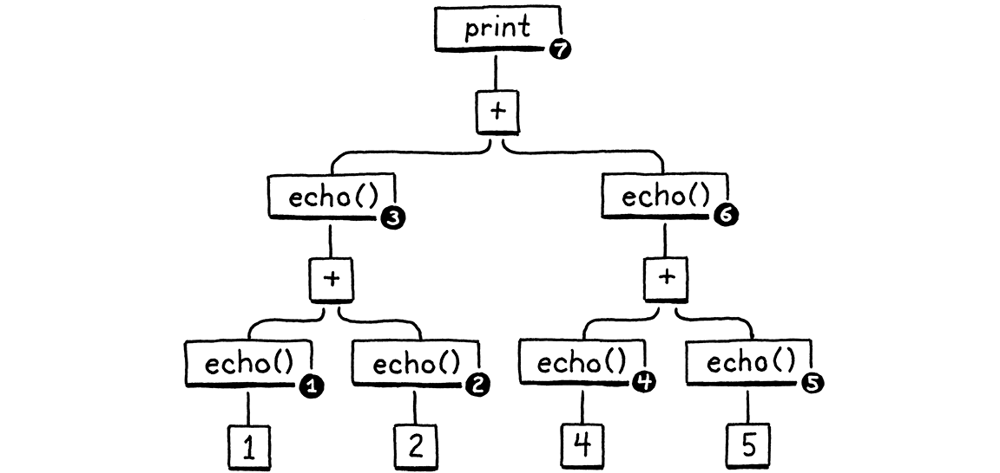
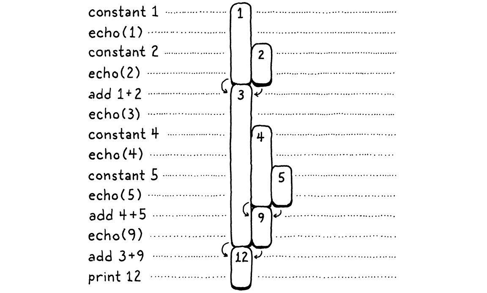

A Virtual Machine
Các ảo thuật gia giữ bí mật của họ không phải vì những bí mật đó to tát và quan trọng, mà vì chúng quá nhỏ nhặt và tầm thường. Những hiệu ứng tuyệt vời trên sân khấu thường là kết quả của một bí mật lố bịch đến mức ảo thuật gia sẽ thấy xấu hổ nếu phải thừa nhận rằng đó là cách họ làm.
Christopher Priest, The Prestige
Chúng ta đã dành khá nhiều thời gian nói về cách biểu diễn một chương trình dưới dạng một chuỗi các bytecode instruction, nhưng cảm giác giống như đang học sinh học chỉ bằng những con vật nhồi bông đã chết. Ta biết về các instruction trên lý thuyết, nhưng chưa bao giờ thấy chúng hoạt động, nên thật khó để thực sự hiểu chúng làm gì. Sẽ rất khó để viết một compiler sinh ra bytecode khi ta chưa hiểu rõ bytecode đó vận hành thế nào.
Vì vậy, trước khi bắt tay xây dựng front end cho interpreter mới, chúng ta sẽ bắt đầu từ back end — virtual machine execute các instruction. Nó thổi sự sống vào bytecode. Việc quan sát các instruction “nhảy múa” sẽ cho ta một hình dung rõ ràng hơn về cách một compiler có thể dịch source code của người dùng thành một chuỗi các instruction như thế.
15 . 1An Instruction Execution Machine
Virtual machine là một phần trong kiến trúc bên trong của interpreter. Bạn đưa cho nó một khối code — đúng nghĩa là một Chunk — và nó sẽ chạy khối đó. Code và các cấu trúc dữ liệu cho VM nằm trong một module mới.
create new file
#ifndef clox_vm_h #define clox_vm_h #include "chunk.h" typedef struct { Chunk* chunk; } VM; void initVM(); void freeVM(); #endif
Như thường lệ, ta bắt đầu đơn giản. VM sẽ dần dần có thêm một đống trạng thái cần theo dõi, nên ta định nghĩa một struct ngay từ bây giờ để chứa tất cả. Hiện tại, thứ duy nhất ta lưu là chunk mà nó sẽ execute.
Giống như với hầu hết các cấu trúc dữ liệu khác mà ta tạo, ta cũng định nghĩa các hàm để tạo và giải phóng VM. Đây là phần hiện thực:
create new file
#include "common.h" #include "vm.h" VM vm; void initVM() { } void freeVM() { }
OK, gọi những hàm này là “hiện thực” thì hơi quá. Chúng ta chưa có trạng thái thú vị nào để khởi tạo hay giải phóng, nên các hàm này hiện trống trơn. Tin tôi đi, rồi sẽ có.
Dòng thú vị hơn một chút ở đây là khai báo vm. Module này cuối cùng sẽ có cả đống hàm, và sẽ thật phiền nếu phải truyền con trỏ tới VM cho tất cả chúng. Thay vào đó, ta khai báo một đối tượng VM toàn cục duy nhất. Ta chỉ cần một cái thôi, và cách này giúp code trong sách gọn gàng hơn một chút.
Trước khi bắt đầu “bơm” code thú vị vào VM, hãy kết nối nó với entrypoint chính của interpreter.
int main(int argc, const char* argv[]) {
in main()
initVM();
Chunk chunk;
Ta khởi động VM khi interpreter bắt đầu chạy. Rồi khi sắp thoát, ta tắt nó đi.
disassembleChunk(&chunk, "test chunk");
in main()
freeVM();
freeChunk(&chunk);
Một nghi thức cuối cùng:
#include "debug.h"
#include "vm.h"
int main(int argc, const char* argv[]) {
Giờ khi bạn chạy clox, nó sẽ khởi động VM trước khi tạo chunk viết tay từ chương trước. VM đã sẵn sàng và chờ đợi, vậy hãy dạy nó làm gì đó.
15 . 1 . 1Executing instructions
VM bắt đầu hoạt động khi ta yêu cầu nó interpret một chunk bytecode.
disassembleChunk(&chunk, "test chunk");
in main()
interpret(&chunk);
freeVM();
Hàm này là entrypoint chính vào VM. Nó được khai báo như sau:
void freeVM();
add after freeVM()
InterpretResult interpret(Chunk* chunk);
#endif
VM chạy chunk và trả về một giá trị từ enum này:
} VM;
add after struct VM
typedef enum { INTERPRET_OK, INTERPRET_COMPILE_ERROR, INTERPRET_RUNTIME_ERROR } InterpretResult;
void initVM(); void freeVM();
Chúng ta chưa dùng kết quả này, nhưng khi có một compiler báo lỗi tĩnh và một VM phát hiện lỗi runtime, interpreter sẽ dùng nó để biết cách đặt exit code cho tiến trình.
Chúng ta đang tiến gần hơn tới phần hiện thực thực sự.
add after freeVM()
InterpretResult interpret(Chunk* chunk) { vm.chunk = chunk; vm.ip = vm.chunk->code; return run(); }
Đầu tiên, ta lưu chunk đang được execute vào VM. Sau đó gọi run(), một hàm nội bộ thực sự chạy các bytecode instruction. Giữa hai bước đó là một dòng khá thú vị. ip là gì vậy?
Khi VM chạy qua bytecode, nó cần theo dõi vị trí hiện tại — tức là vị trí của instruction đang được execute. Ta không dùng một biến local bên trong run() cho việc này vì sau này sẽ có những hàm khác cần truy cập nó. Thay vào đó, ta lưu nó như một field trong VM.
typedef struct {
Chunk* chunk;
in struct VM
uint8_t* ip;
} VM;
Kiểu của nó là một byte pointer. Chúng ta dùng một con trỏ C “thật” trỏ thẳng vào giữa mảng bytecode thay vì thứ gì đó như một chỉ số nguyên, vì việc dereference một con trỏ nhanh hơn so với việc truy xuất phần tử trong mảng bằng chỉ số.
Tên gọi “IP” là truyền thống, và — không giống nhiều tên gọi truyền thống khác trong khoa học máy tính — thực sự hợp lý: nó là một instruction pointer. Hầu như mọi tập lệnh instruction trên thế giới, dù là thật hay ảo, đều có một thanh ghi hoặc biến như thế này.
Chúng ta khởi tạo ip bằng cách trỏ nó tới byte đầu tiên của code trong chunk. Chúng ta chưa execute instruction đó, nên ip trỏ tới instruction sắp được execute. Điều này sẽ đúng trong suốt thời gian VM chạy: IP luôn trỏ tới instruction kế tiếp, không phải instruction hiện tại đang xử lý.
Phần thú vị thực sự diễn ra trong run().
add after freeVM()
static InterpretResult run() { #define READ_BYTE() (*vm.ip++) for (;;) { uint8_t instruction; switch (instruction = READ_BYTE()) { case OP_RETURN: { return INTERPRET_OK; } } } #undef READ_BYTE }
Đây là hàm quan trọng nhất trong toàn bộ clox, không nghi ngờ gì. Khi interpreter execute chương trình của người dùng, nó sẽ dành khoảng 90% thời gian bên trong run(). Đây là “trái tim” đang đập của VM.
Dù phần mở đầu nghe có vẻ kịch tính, về mặt khái niệm nó khá đơn giản. Chúng ta có một vòng lặp ngoài chạy liên tục. Mỗi vòng lặp, ta đọc và execute một bytecode instruction.
Để xử lý một instruction, trước tiên ta xác định loại instruction đang gặp. Macro READ_BYTE đọc byte hiện tại mà ip đang trỏ tới, rồi tăng instruction pointer. Byte đầu tiên của bất kỳ instruction nào là opcode. Khi có một opcode dạng số, ta cần tìm đến đoạn code C hiện thực semantics của instruction đó. Quá trình này được gọi là decoding hoặc dispatching instruction.
Chúng ta làm quá trình này cho từng instruction, mỗi lần một instruction được execute, nên đây là phần quan trọng nhất về hiệu năng của toàn bộ virtual machine. Lịch sử lập trình ngôn ngữ đầy rẫy những kỹ thuật khéo léo để dispatch bytecode hiệu quả, từ những ngày đầu của máy tính.
Tiếc là, các giải pháp nhanh nhất lại yêu cầu hoặc là các phần mở rộng không chuẩn của C, hoặc là code assembly viết tay. Với clox, ta sẽ giữ mọi thứ đơn giản. Giống như disassembler của chúng ta, ta có một câu lệnh switch khổng lồ với một case cho mỗi opcode. Phần thân của mỗi case hiện thực hành vi của opcode đó.
Cho đến giờ, ta mới xử lý một instruction duy nhất, OP_RETURN, và việc duy nhất nó làm là thoát khỏi vòng lặp hoàn toàn. Sau này, instruction đó sẽ được dùng để trả về từ hàm Lox hiện tại, nhưng vì ta chưa có hàm, nên tạm thời sẽ dùng nó để kết thúc việc execute.
Giờ hãy hỗ trợ thêm instruction còn lại của chúng ta.
switch (instruction = READ_BYTE()) {
in run()
case OP_CONSTANT: { Value constant = READ_CONSTANT(); printValue(constant); printf("\n"); break; }
case OP_RETURN: {
Hiện tại, chúng ta chưa có đủ “bộ máy” để làm gì hữu ích với một constant. Trước mắt, ta sẽ chỉ in nó ra để dân “mổ xẻ” interpreter như chúng ta có thể thấy chuyện gì đang diễn ra bên trong VM. Lời gọi printf() đó đòi hỏi phải include thêm một thư viện.
add to top of file
#include <stdio.h>
#include "common.h"
Chúng ta cũng có một macro mới cần định nghĩa.
#define READ_BYTE() (*vm.ip++)
in run()
#define READ_CONSTANT() (vm.chunk->constants.values[READ_BYTE()])
for (;;) {
READ_CONSTANT() đọc byte tiếp theo từ bytecode, coi số nhận được là một chỉ số, rồi tra giá trị Value tương ứng trong bảng constant của chunk. Trong các chương sau, ta sẽ thêm vài instruction nữa có toán hạng tham chiếu tới constant, nên ta chuẩn bị macro tiện ích này ngay từ bây giờ.
Giống như macro READ_BYTE trước đó, READ_CONSTANT chỉ được dùng bên trong run(). Để làm rõ phạm vi này, các macro được định nghĩa ngay trong hàm và — vì chúng ta cẩn thận — được undefine ở cuối.
#undef READ_BYTE
in run()
#undef READ_CONSTANT
}
15 . 1 . 2Execution tracing
Nếu bạn chạy clox ngay bây giờ, nó sẽ execute chunk mà chúng ta viết tay trong chương trước và in ra 1.2 trên terminal. Chúng ta thấy nó hoạt động, nhưng đó chỉ là vì phần hiện thực OP_CONSTANT hiện đang có đoạn code tạm thời để log giá trị. Khi instruction này thực sự làm đúng nhiệm vụ của nó và truyền constant đó cho các thao tác khác cần dùng, VM sẽ trở thành một “hộp đen”. Điều đó khiến công việc của chúng ta — những người hiện thực VM — trở nên khó khăn hơn.
Để giúp bản thân, đây là lúc thích hợp để thêm một chút logging chẩn đoán cho VM, giống như chúng ta đã làm với các chunk. Thực tế, ta sẽ tái sử dụng lại chính đoạn code đó. Chúng ta không muốn logging này luôn bật — nó chỉ dành cho dân “mổ xẻ” VM như chúng ta, không phải cho người dùng Lox — nên trước tiên ta tạo một flag (flag) để bật/tắt nó.
#include <stdint.h>
#define DEBUG_TRACE_EXECUTION
#endif
Khi flag này được định nghĩa, VM sẽ disassemble và in ra từng instruction ngay trước khi execute nó. Nếu disassembler trước đây của chúng ta duyệt toàn bộ chunk một lần theo cách tĩnh, thì lần này nó disassemble instruction một cách động, ngay tại thời điểm chạy.
for (;;) {
in run()
#ifdef DEBUG_TRACE_EXECUTION disassembleInstruction(vm.chunk, (int)(vm.ip - vm.chunk->code)); #endif
uint8_t instruction;
Vì disassembleInstruction() nhận vào một số nguyên là byte offset và chúng ta lưu vị trí instruction hiện tại dưới dạng con trỏ trực tiếp, nên trước tiên ta cần làm một chút toán học con trỏ để chuyển ip về offset tương đối so với đầu mảng bytecode. Sau đó, ta disassemble instruction bắt đầu tại byte đó.
Như mọi khi, ta cần khai báo hàm trước khi có thể gọi nó.
#include "common.h"
#include "debug.h"
#include "vm.h"
Tôi biết đoạn code này tới giờ chưa có gì ấn tượng — về cơ bản chỉ là một câu lệnh switch bọc trong vòng lặp for — nhưng tin hay không thì đây là một trong hai thành phần chính của VM. Với nó, chúng ta có thể execute instruction theo kiểu mệnh lệnh. Sự đơn giản này là một ưu điểm — càng làm ít việc, nó càng chạy nhanh. Hãy so sánh với tất cả sự phức tạp và overhead mà chúng ta từng có trong jlox với Visitor pattern để duyệt AST.
15 . 2A Value Stack Manipulator
Ngoài các hiệu ứng phụ theo kiểu mệnh lệnh, Lox còn có các biểu thức sinh ra, thay đổi và tiêu thụ giá trị. Do đó, bytecode đã compile của chúng ta cần một cách để “chuyển” giá trị qua lại giữa các instruction cần chúng. Ví dụ:
print 3 - 2;
Rõ ràng ta cần các instruction cho constant 3 và 2, câu lệnh print, và phép trừ. Nhưng làm sao instruction trừ biết rằng 3 là minuend và 2 là subtrahend? Làm sao instruction print biết cần in ra kết quả đó?
Để làm rõ hơn, hãy xem ví dụ này:
fun echo(n) { print n; return n; } print echo(echo(1) + echo(2)) + echo(echo(4) + echo(5));
Tôi đã bọc mỗi biểu thức con trong một lời gọi echo() để in và trả về đối số của nó. Hiệu ứng phụ này giúp ta thấy chính xác thứ tự thực hiện các thao tác.
Tạm quên VM đi một chút. Hãy nghĩ về semantics của Lox. Các toán hạng của một toán tử số học rõ ràng cần được đánh giá trước khi ta có thể thực hiện phép toán. (Khó mà cộng a + b nếu bạn không biết a và b là gì.) Ngoài ra, khi hiện thực biểu thức trong jlox, chúng ta đã quyết định rằng toán hạng bên trái phải được đánh giá trước toán hạng bên phải.
Đây là cây cú pháp (AST) cho câu lệnh print:

Với việc đánh giá từ trái sang phải, và cách các biểu thức được lồng nhau, bất kỳ implementation Lox đúng đắn nào cũng phải in ra các số theo thứ tự này:
1 // từ echo(1) 2 // từ echo(2) 3 // từ echo(1 + 2) 4 // từ echo(4) 5 // từ echo(5) 9 // từ echo(4 + 5) 12 // từ print 3 + 9
Interpreter jlox cũ của chúng ta làm điều này bằng cách duyệt đệ quy AST. Nó thực hiện duyệt hậu tự (postorder traversal). Đầu tiên nó đệ quy xuống nhánh toán hạng trái, sau đó là nhánh toán hạng phải, rồi cuối cùng mới đánh giá node hiện tại.
Sau khi đánh giá toán hạng trái, jlox cần lưu tạm kết quả đó ở đâu đó trong khi nó tiếp tục duyệt xuống cây toán hạng phải. Chúng ta dùng một biến local trong Java cho việc này. Interpreter tree-walk đệ quy của chúng ta tạo một Java call frame riêng cho mỗi node đang được đánh giá, nên ta có thể có bao nhiêu biến local tùy ý.
Trong clox, hàm run() của chúng ta không đệ quy — cây biểu thức lồng nhau được “làm phẳng” thành một chuỗi instruction tuyến tính. Chúng ta không có đặc quyền dùng biến local của C, vậy ta nên lưu các giá trị tạm này ở đâu và như thế nào? Có lẽ bạn đã đoán được rồi, nhưng tôi muốn nhấn mạnh điều này vì đây là một khía cạnh lập trình mà ta thường coi là hiển nhiên, nhưng hiếm khi học tại sao máy tính lại được thiết kế theo cách đó.
Hãy cùng làm một bài tập hơi kỳ lạ. Chúng ta sẽ đi qua quá trình execute của chương trình trên từng bước một:

Bên trái là các bước code. Bên phải là các giá trị mà ta đang theo dõi. Mỗi thanh ngang đại diện cho một con số. Nó bắt đầu khi giá trị đó lần đầu được tạo ra — có thể là một hằng số hoặc kết quả của một phép cộng. Độ dài của thanh thể hiện khoảng thời gian mà giá trị đã tạo cần được giữ lại, và nó kết thúc khi giá trị đó cuối cùng bị một phép toán tiêu thụ.
Khi bạn đi từng bước, bạn sẽ thấy các giá trị xuất hiện rồi sau đó bị “ăn mất”. Những giá trị sống lâu nhất là các giá trị được tạo ra từ toán hạng bên trái của một phép cộng. Chúng tồn tại trong khi ta xử lý biểu thức toán hạng bên phải.
Trong sơ đồ trên, tôi đã cho mỗi con số duy nhất một cột trực quan riêng. Giờ hãy tiết kiệm hơn một chút. Khi một số đã bị tiêu thụ, ta cho phép cột của nó được tái sử dụng cho một giá trị khác xuất hiện sau đó. Nói cách khác, ta lấp đầy tất cả các khoảng trống ở trên bằng cách đẩy các số từ bên phải vào:

Có vài điều thú vị ở đây. Khi ta dồn mọi thứ lại, mỗi con số vẫn nằm gọn trong một cột duy nhất suốt vòng đời của nó. Ngoài ra, không còn khoảng trống nào. Nói cách khác, bất cứ khi nào một số xuất hiện trước một số khác, thì nó sẽ sống ít nhất lâu bằng số thứ hai. Số xuất hiện đầu tiên sẽ là số cuối cùng bị tiêu thụ. Ừm… last-in, first-out… à ha, đó chính là một stack!
Trong sơ đồ thứ hai, mỗi khi ta đưa vào một con số mới, ta push nó vào stack từ bên phải. Khi các số bị tiêu thụ, chúng luôn được pop ra từ phải sang trái.
Bởi vì các giá trị tạm thời mà ta cần theo dõi vốn dĩ đã có hành vi giống stack, VM của chúng ta sẽ dùng một stack để quản lý chúng. Khi một instruction “tạo ra” một giá trị, nó sẽ push giá trị đó lên stack. Khi cần tiêu thụ một hoặc nhiều giá trị, nó sẽ lấy chúng bằng cách pop từ stack.
15 . 2 . 1The VM’s Stack
Có thể điều này không phải là một khám phá lớn, nhưng tôi rất thích các stack-based VM. Khi bạn lần đầu thấy một màn ảo thuật, nó giống như có gì đó thực sự kỳ diệu. Nhưng rồi bạn biết được cách nó hoạt động — thường là một mánh cơ học hoặc đánh lạc hướng — và cảm giác kỳ diệu biến mất. Có một vài ý tưởng trong khoa học máy tính mà ngay cả khi tôi đã “mổ xẻ” và hiểu hết mọi ngóc ngách, một phần cảm giác ban đầu vẫn còn. Stack-based VM là một trong số đó.
Như bạn sẽ thấy trong chương này, việc execute instruction trong một stack-based VM cực kỳ đơn giản. Ở các chương sau, bạn cũng sẽ thấy rằng compile một ngôn ngữ nguồn sang một tập lệnh stack-based là chuyện dễ như ăn bánh. Thế nhưng, kiến trúc này vẫn đủ nhanh để được dùng trong các implementation ngôn ngữ ở môi trường production. Nó gần như khiến bạn cảm giác như đang “ăn gian” trong trò chơi lập trình ngôn ngữ vậy.
Được rồi, đến lúc code thôi! Đây là stack:
typedef struct {
Chunk* chunk;
uint8_t* ip;
in struct VM
Value stack[STACK_MAX]; Value* stackTop;
} VM;
Chúng ta sẽ tự hiện thực cơ chế stack trên nền một mảng C thô. Đáy của stack — giá trị được push đầu tiên và pop cuối cùng — nằm ở phần tử số 0 trong mảng, và các giá trị được push sau sẽ nằm tiếp theo nó. Nếu ta push các chữ cái của từ “crepe” — món ăn sáng dạng stack yêu thích của tôi — lên stack theo thứ tự, mảng C kết quả sẽ trông như thế này:

Vì stack sẽ lớn lên và thu nhỏ lại khi các giá trị được push và pop, chúng ta cần theo dõi vị trí đỉnh của stack trong mảng. Giống như với ip, ta dùng một con trỏ trực tiếp thay vì một chỉ số nguyên, vì dereference con trỏ nhanh hơn so với việc tính toán offset từ chỉ số mỗi khi cần.
Con trỏ này trỏ tới phần tử của mảng nằm ngay sau phần tử chứa giá trị trên đỉnh stack. Nghe có vẻ hơi lạ, nhưng hầu như mọi implementation đều làm vậy. Cách này cho phép ta biểu thị stack rỗng bằng cách trỏ tới phần tử số 0 trong mảng.

Nếu ta trỏ trực tiếp vào phần tử trên đỉnh, thì với stack rỗng, ta sẽ phải trỏ tới phần tử -1. Điều đó là undefined trong C. Khi ta push giá trị vào stack…

…stackTop luôn trỏ ngay sau phần tử cuối cùng.

Tôi nhớ nó thế này: stackTop trỏ tới vị trí mà giá trị tiếp theo sẽ được push vào. Số lượng giá trị tối đa mà ta có thể lưu trên stack (ít nhất là hiện tại) là:
#include "chunk.h"
#define STACK_MAX 256
typedef struct {
Việc cho VM một kích thước stack cố định đồng nghĩa với việc có thể sẽ có một chuỗi instruction nào đó push quá nhiều giá trị và hết chỗ — tình huống kinh điển “stack overflow”. Ta có thể mở rộng stack động khi cần, nhưng hiện tại ta sẽ giữ mọi thứ đơn giản. Vì VM dùng Value, ta cần include phần khai báo của nó.
#include "chunk.h"
#include "value.h"
#define STACK_MAX 256
Giờ khi VM đã có một số trạng thái thú vị, ta sẽ khởi tạo nó.
void initVM() {
in initVM()
resetStack();
}
Hàm này dùng helper function sau:
add after variable vm
static void resetStack() { vm.stackTop = vm.stack; }
Vì mảng stack được khai báo trực tiếp bên trong struct của VM, ta không cần cấp phát bộ nhớ cho nó. Ta thậm chí không cần xóa các ô chưa dùng trong mảng — ta đơn giản sẽ không truy cập chúng cho đến khi có giá trị được lưu vào. Việc khởi tạo duy nhất cần làm là đặt stackTop trỏ tới đầu mảng để biểu thị stack rỗng.
Giao thức của stack hỗ trợ hai thao tác:
InterpretResult interpret(Chunk* chunk);
add after interpret()
void push(Value value); Value pop();
#endif
Bạn có thể push một giá trị mới lên đỉnh stack, và bạn có thể pop giá trị được push gần nhất ra. Đây là hàm đầu tiên:
add after freeVM()
void push(Value value) { *vm.stackTop = value; vm.stackTop++; }
Nếu bạn đã hơi quên cú pháp và thao tác con trỏ trong C, đây là một bài khởi động tốt. Dòng đầu tiên lưu value vào phần tử mảng ở vị trí đỉnh stack. Nhớ rằng, stackTop trỏ ngay sau phần tử đã dùng cuối cùng, tức là phần tử trống tiếp theo. Lệnh này lưu giá trị vào ô đó. Sau đó, ta tăng chính con trỏ này để nó trỏ tới ô trống tiếp theo trong mảng, vì ô trước đó giờ đã được dùng.
Pop thì ngược lại.
add after push()
Value pop() { vm.stackTop--; return *vm.stackTop; }
Đầu tiên, ta di chuyển con trỏ stack lùi lại để tới ô đã dùng gần nhất trong mảng. Sau đó, ta lấy giá trị ở ô đó và trả về. Ta không cần “xóa” nó khỏi mảng một cách tường minh — chỉ cần di chuyển stackTop xuống là đủ để đánh dấu ô đó không còn được sử dụng nữa.
15 . 2 . 2Stack tracing
Chúng ta đã có một stack hoạt động, nhưng thật khó để nhìn thấy nó đang hoạt động. Khi bắt đầu hiện thực các instruction phức tạp hơn và compile, chạy những đoạn code lớn hơn, chúng ta sẽ có rất nhiều giá trị bị “nhồi” vào mảng đó. Sẽ dễ dàng hơn cho chúng ta — những người mổ xẻ VM — nếu có thể quan sát được stack.
Vì vậy, mỗi khi bật chế độ trace execution, chúng ta cũng sẽ hiển thị nội dung hiện tại của stack trước khi execute từng instruction.
#ifdef DEBUG_TRACE_EXECUTION
in run()
printf(" "); for (Value* slot = vm.stack; slot < vm.stackTop; slot++) { printf("[ "); printValue(*slot); printf(" ]"); } printf("\n");
disassembleInstruction(vm.chunk,
Ta sẽ lặp qua, in ra từng giá trị trong mảng, bắt đầu từ phần tử đầu tiên (đáy stack) và kết thúc khi chạm tới đỉnh. Điều này cho phép ta quan sát tác động của từng instruction lên stack. Kết quả in ra sẽ khá dài dòng, nhưng rất hữu ích khi ta đang “mổ xẻ” một bug khó chịu nằm sâu trong lòng interpreter.
Có stack trong tay, hãy quay lại với hai instruction của chúng ta. Đầu tiên là:
case OP_CONSTANT: {
Value constant = READ_CONSTANT();
in run()
replace 2 lines
push(constant);
break;
Trong chương trước, tôi đã nói khá mơ hồ về việc instruction OP_CONSTANT “nạp” một constant như thế nào. Giờ khi đã có stack, bạn biết rằng việc “tạo ra” một giá trị thực sự nghĩa là: push nó lên stack.
case OP_RETURN: {
in run()
printValue(pop()); printf("\n");
return INTERPRET_OK;
Sau đó, ta cho OP_RETURN pop stack và in ra giá trị trên đỉnh trước khi thoát. Khi sau này thêm hỗ trợ function thực sự cho clox, ta sẽ thay đổi đoạn code này. Nhưng hiện tại, nó cho ta một cách để VM execute các chuỗi instruction đơn giản và hiển thị kết quả.
15 . 3An Arithmetic Calculator
Giờ thì “trái tim” và “linh hồn” của VM đã sẵn sàng. Vòng lặp bytecode dispatch và execute instruction. Stack phình ra và thu lại khi giá trị đi qua nó. Hai phần này hoạt động, nhưng thật khó để cảm nhận được sự “ăn ý” của chúng khi ta mới chỉ có hai instruction sơ khai. Vậy nên, hãy dạy interpreter của chúng ta làm toán.
Bắt đầu với phép toán đơn giản nhất: toán tử đơn ngôi (unary) phủ định.
var a = 1.2; print -a; // -1.2.
Toán tử tiền tố - nhận một toán hạng, là giá trị cần đổi dấu. Nó tạo ra một kết quả duy nhất. Chúng ta chưa động tới parser, nhưng có thể thêm instruction bytecode mà cú pháp trên sẽ compile thành.
OP_CONSTANT,
in enum OpCode
OP_NEGATE,
OP_RETURN,
Ta execute nó như sau:
}
in run()
case OP_NEGATE: push(-pop()); break;
case OP_RETURN: {
Instruction này cần một giá trị để thao tác, nó lấy bằng cách pop từ stack. Sau đó đổi dấu giá trị đó, rồi push kết quả trở lại để các instruction sau có thể dùng. Không thể đơn giản hơn. Ta cũng có thể disassemble nó.
case OP_CONSTANT:
return constantInstruction("OP_CONSTANT", chunk, offset);
in disassembleInstruction()
case OP_NEGATE: return simpleInstruction("OP_NEGATE", offset);
case OP_RETURN:
Và thử nó trong chunk test của chúng ta.
writeChunk(&chunk, constant, 123);
in main()
writeChunk(&chunk, OP_NEGATE, 123);
writeChunk(&chunk, OP_RETURN, 123);
Sau khi nạp constant, nhưng trước khi return, ta execute instruction negate. Nó thay thế constant trên stack bằng giá trị phủ định của nó. Sau đó, instruction return in ra giá trị đó:
-1.2
Thật “ảo diệu”!
15 . 3 . 1Binary operators
OK, toán tử đơn ngôi thì cũng không quá ấn tượng. Ta vẫn chỉ có một giá trị trên stack. Để thấy được “chiều sâu” hơn, ta cần các toán tử nhị phân (binary). Lox có bốn toán tử số học nhị phân: cộng, trừ, nhân và chia. Chúng ta sẽ hiện thực tất cả cùng lúc.
OP_CONSTANT,
in enum OpCode
OP_ADD, OP_SUBTRACT, OP_MULTIPLY, OP_DIVIDE,
OP_NEGATE,
Quay lại vòng lặp bytecode, chúng được execute như sau:
}
in run()
case OP_ADD: BINARY_OP(+); break; case OP_SUBTRACT: BINARY_OP(-); break; case OP_MULTIPLY: BINARY_OP(*); break; case OP_DIVIDE: BINARY_OP(/); break;
case OP_NEGATE: push(-pop()); break;
Điểm khác nhau duy nhất giữa bốn instruction này là toán tử C mà chúng dùng để kết hợp hai toán hạng. Bao quanh biểu thức số học cốt lõi đó là một số đoạn code lặp để lấy giá trị từ stack và push kết quả. Sau này khi thêm dynamic typing, phần code lặp này sẽ phình ra. Để tránh lặp lại bốn lần, tôi gói nó vào một macro.
#define READ_CONSTANT() (vm.chunk->constants.values[READ_BYTE()])
in run()
#define BINARY_OP(op) \ do { \ double b = pop(); \ double a = pop(); \ push(a op b); \ } while (false)
for (;;) {
Tôi thừa nhận đây là một cách dùng C preprocessor khá “mạo hiểm”. Tôi đã do dự, nhưng bạn sẽ thấy vui khi tới các chương sau, khi ta cần thêm kiểm tra kiểu cho từng toán hạng và các thứ khác. Sẽ thật mệt mỏi nếu phải dẫn bạn qua cùng một đoạn code bốn lần.
Nếu bạn chưa quen với mẹo này, vòng lặp do while bên ngoài có thể trông rất kỳ. Macro này cần mở rộng thành một chuỗi statement. Để là tác giả macro cẩn thận, ta muốn đảm bảo các statement đó đều nằm trong cùng một scope khi macro được expand. Hãy tưởng tượng nếu bạn định nghĩa:
#define WAKE_UP() makeCoffee(); drinkCoffee();
Rồi dùng nó như sau:
if (morning) WAKE_UP();
Ý định là execute cả hai câu lệnh trong macro body chỉ khi morning là true. Nhưng nó expand thành:
if (morning) makeCoffee(); drinkCoffee();;
Ối. if chỉ gắn với câu lệnh đầu tiên. Bạn có thể nghĩ tới việc sửa bằng cách dùng block:
#define WAKE_UP() { makeCoffee(); drinkCoffee(); }
Nghe có vẻ ổn hơn, nhưng bạn vẫn có nguy cơ:
if (morning) WAKE_UP(); else sleepIn();
Giờ thì bạn sẽ gặp lỗi compile ở else vì dấu ; thừa sau block của macro. Việc dùng vòng lặp do while trong macro trông hơi buồn cười, nhưng nó cho bạn một cách để chứa nhiều câu lệnh bên trong một block mà vẫn cho phép có dấu chấm phẩy ở cuối.
Chúng ta đang ở đâu nhỉ? À đúng rồi, phần thân của macro đó thực ra rất đơn giản. Một toán tử nhị phân nhận hai toán hạng, nên nó sẽ pop hai lần. Sau đó, nó thực hiện phép toán trên hai giá trị đó và push kết quả trở lại.
Hãy chú ý kỹ đến thứ tự của hai lần pop. Lưu ý rằng chúng ta gán toán hạng pop đầu tiên cho b, không phải a. Trông có vẻ ngược. Khi các toán hạng được tính toán, toán hạng bên trái được đánh giá trước, rồi mới đến bên phải. Điều đó có nghĩa là toán hạng bên trái sẽ được push trước toán hạng bên phải. Vì vậy, toán hạng bên phải sẽ nằm trên đỉnh stack. Do đó, giá trị đầu tiên chúng ta pop ra sẽ là b.
Ví dụ, nếu ta compile 3 - 1, luồng dữ liệu giữa các instruction sẽ như sau:

Giống như với các macro khác bên trong run(), chúng ta dọn dẹp sau khi xong việc ở cuối hàm.
#undef READ_CONSTANT
in run()
#undef BINARY_OP
}
Cuối cùng là hỗ trợ cho disassembler.
case OP_CONSTANT:
return constantInstruction("OP_CONSTANT", chunk, offset);
in disassembleInstruction()
case OP_ADD: return simpleInstruction("OP_ADD", offset); case OP_SUBTRACT: return simpleInstruction("OP_SUBTRACT", offset); case OP_MULTIPLY: return simpleInstruction("OP_MULTIPLY", offset); case OP_DIVIDE: return simpleInstruction("OP_DIVIDE", offset);
case OP_NEGATE:
Định dạng của các instruction số học rất đơn giản, giống như OP_RETURN. Dù các toán tử số học nhận toán hạng — được lấy từ stack — nhưng các instruction bytecode số học thì không.
Hãy thử “chạy thử” một số instruction mới của chúng ta bằng cách tính một biểu thức lớn hơn:

Dựa trên chunk ví dụ hiện có, đây là các instruction bổ sung mà ta cần để “compile tay” AST đó thành bytecode.
int constant = addConstant(&chunk, 1.2); writeChunk(&chunk, OP_CONSTANT, 123); writeChunk(&chunk, constant, 123);
in main()
constant = addConstant(&chunk, 3.4); writeChunk(&chunk, OP_CONSTANT, 123); writeChunk(&chunk, constant, 123); writeChunk(&chunk, OP_ADD, 123); constant = addConstant(&chunk, 5.6); writeChunk(&chunk, OP_CONSTANT, 123); writeChunk(&chunk, constant, 123); writeChunk(&chunk, OP_DIVIDE, 123);
writeChunk(&chunk, OP_NEGATE, 123); writeChunk(&chunk, OP_RETURN, 123);
Phép cộng được thực hiện trước. Instruction cho constant bên trái, 1.2, đã có sẵn, nên ta thêm một instruction nữa cho 3.4. Sau đó, ta cộng hai số này bằng OP_ADD, để lại kết quả trên stack. Điều đó xử lý xong phía bên trái của phép chia. Tiếp theo, ta push 5.6, và chia kết quả của phép cộng cho nó. Cuối cùng, ta đổi dấu kết quả đó.
Hãy để ý cách output của OP_ADD tự động trở thành toán hạng của OP_DIVIDE mà không cần hai instruction này phải liên kết trực tiếp với nhau. Đó chính là “phép màu” của stack. Nó cho phép ta tự do kết hợp các instruction mà không cần thêm sự phức tạp hay phải biết về luồng dữ liệu. Stack hoạt động như một vùng làm việc chung mà tất cả đều đọc và ghi vào đó.
Trong chunk ví dụ nhỏ này, stack vẫn chỉ cao tối đa hai giá trị, nhưng khi ta bắt đầu compile Lox source sang bytecode, sẽ có những chunk dùng nhiều stack hơn. Trong lúc chờ, hãy thử nghịch với chunk viết tay này để tính các biểu thức số học lồng nhau khác nhau và xem cách giá trị di chuyển qua các instruction và stack.
Bạn có thể “xả” hết hứng thú với việc viết chunk tay ngay bây giờ. Đây là chunk cuối cùng chúng ta sẽ tự viết. Lần tới khi quay lại với bytecode, chúng ta sẽ viết một compiler để tự sinh ra nó.
15 . 4Thử thách
-
Bạn sẽ sinh ra chuỗi instruction bytecode nào cho các biểu thức sau:
1 * 2 + 3 1 + 2 * 3 3 - 2 - 1 1 + 2 * 3 - 4 / -5
(Nhớ rằng Lox không có cú pháp cho literal số âm, nên
-5là đang đổi dấu số 5.) -
Nếu chúng ta thực sự muốn một tập instruction tối giản, ta có thể loại bỏ
OP_NEGATEhoặcOP_SUBTRACT. Hãy cho thấy chuỗi instruction bytecode bạn sẽ sinh ra cho:4 - 3 * -2
Đầu tiên, không dùng
OP_NEGATE. Sau đó, không dùngOP_SUBTRACT.Với những gì ở trên, bạn có nghĩ rằng nên giữ cả hai instruction không? Tại sao hoặc tại sao không? Có instruction nào khác bị trùng lặp mà bạn sẽ cân nhắc đưa vào không?
-
Stack của VM hiện có kích thước cố định, và chúng ta không kiểm tra việc push giá trị có gây tràn stack hay không. Điều này có nghĩa là một chuỗi instruction sai có thể khiến interpreter bị crash hoặc rơi vào hành vi undefined. Hãy tránh điều đó bằng cách mở rộng stack động khi cần.
Chi phí và lợi ích của việc này là gì?
-
Để interpret
OP_NEGATE, ta pop toán hạng, đổi dấu giá trị, rồi push kết quả. Đây là cách hiện thực đơn giản, nhưng nó tăng rồi lại giảmstackTopmột cách không cần thiết, vì cuối cùng stack vẫn cao như cũ. Có thể sẽ nhanh hơn nếu chỉ đổi dấu giá trị ngay tại chỗ trên stack và không động tớistackTop. Hãy thử và xem bạn có đo được sự khác biệt về hiệu năng không.Có instruction nào khác mà bạn có thể tối ưu tương tự không?
15 . 5Ghi chú thiết kế: Register-Based Bytecode
Trong phần còn lại của cuốn sách, chúng ta sẽ tỉ mỉ hiện thực một interpreter xoay quanh một tập lệnh bytecode dạng stack-based. Nhưng ngoài kia còn có một “gia đình” kiến trúc bytecode khác — register-based. Dù tên gọi là vậy, các instruction bytecode này không khó làm việc cùng như các thanh ghi (register) trên một con chip thật như x64. Với các thanh ghi phần cứng thật, bạn thường chỉ có một vài cái cho toàn bộ chương trình, nên bạn phải tốn rất nhiều công sức để dùng chúng hiệu quả và chuyển dữ liệu vào/ra liên tục.
Trong một VM dạng register-based, bạn vẫn có một stack. Các giá trị tạm thời vẫn được push lên và pop xuống khi không còn cần nữa. Điểm khác biệt chính là các instruction có thể đọc dữ liệu đầu vào từ bất kỳ đâu trong stack và có thể lưu kết quả đầu ra vào các ô (slot) cụ thể trên stack.
Hãy xem đoạn script Lox nhỏ này:
var a = 1; var b = 2; var c = a + b;
Trong VM dạng stack-based của chúng ta, câu lệnh cuối sẽ được compile thành dạng như:
load <a> // Đọc biến local a và push lên stack. load <b> // Đọc biến local b và push lên stack. add // Pop hai giá trị, cộng, push kết quả. store <c> // Pop giá trị và lưu vào biến local c.
(Đừng lo nếu bạn chưa hiểu rõ các instruction load và store. Chúng ta sẽ tìm hiểu kỹ hơn khi hiện thực biến.) Ở đây ta có bốn instruction riêng biệt. Nghĩa là bốn lần chạy qua vòng lặp interpret bytecode, bốn instruction cần decode và dispatch. Ít nhất là bảy byte code — bốn byte cho opcode và thêm ba byte cho các toán hạng (operand) xác định biến local nào cần load và store. Ba lần push và ba lần pop. Khá nhiều việc!
Trong một tập lệnh dạng register-based, các instruction có thể đọc và lưu trực tiếp vào biến local. Bytecode cho câu lệnh cuối ở trên sẽ trông như:
add <a> <b> <c> // Đọc giá trị từ a và b, cộng, lưu vào c.
Instruction add này lớn hơn — nó có ba toán hạng xác định vị trí trong stack để đọc dữ liệu đầu vào và ghi kết quả ra. Nhưng vì các biến local nằm trên stack, nó có thể đọc trực tiếp từ a và b, rồi lưu kết quả thẳng vào c.
Chỉ có một instruction cần decode và dispatch, và toàn bộ chỉ chiếm bốn byte. Việc decode phức tạp hơn vì có thêm các toán hạng, nhưng nhìn chung vẫn có lợi. Không cần push/pop hay thao tác stack khác.
Implementation chính của Lua trước đây là stack-based. Tới Lua 5.0, nhóm phát triển đã chuyển sang tập lệnh dạng register và ghi nhận tốc độ được cải thiện. Mức cải thiện, tất nhiên, phụ thuộc nhiều vào chi tiết semantics của ngôn ngữ, tập lệnh cụ thể, và độ tinh vi của compiler, nhưng điều đó cũng đủ để bạn chú ý.
Điều này dẫn đến câu hỏi hiển nhiên: tại sao tôi lại dành phần còn lại của cuốn sách để làm bytecode dạng stack-based. VM dạng register rất thú vị, nhưng việc viết compiler cho chúng khó hơn khá nhiều. Với một compiler rất có thể là đầu tiên của bạn, tôi muốn gắn bó với một tập lệnh dễ sinh ra và dễ execute. Stack-based bytecode thì cực kỳ đơn giản.
Nó cũng phổ biến hơn nhiều trong tài liệu và cộng đồng. Ngay cả khi sau này bạn chuyển sang thứ gì đó tiên tiến hơn, đây vẫn là một nền tảng chung tốt để bạn chia sẻ với những “đồng đạo” yêu thích xây dựng ngôn ngữ khác.